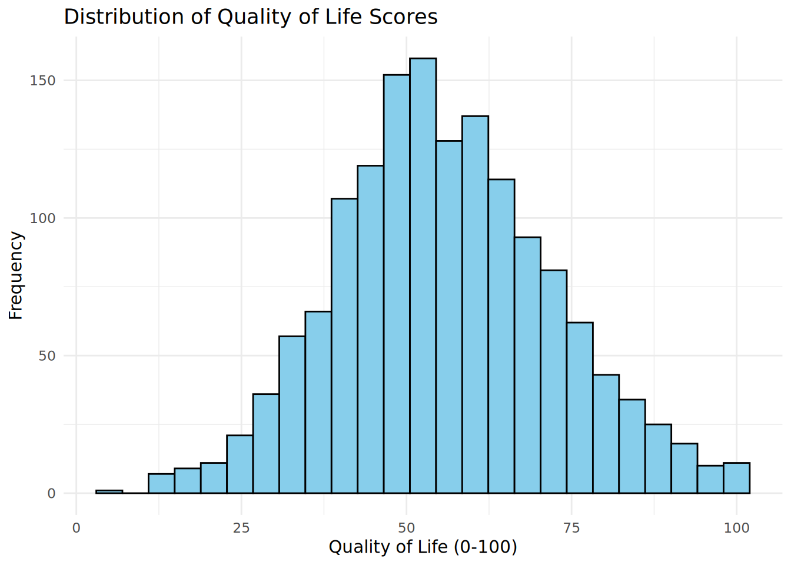
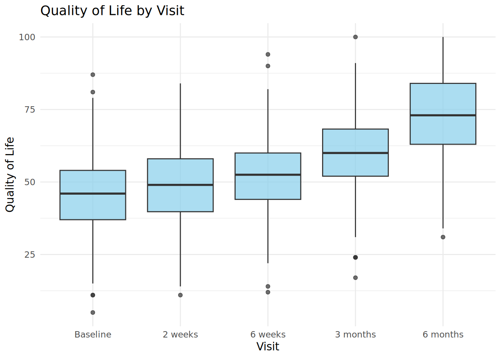
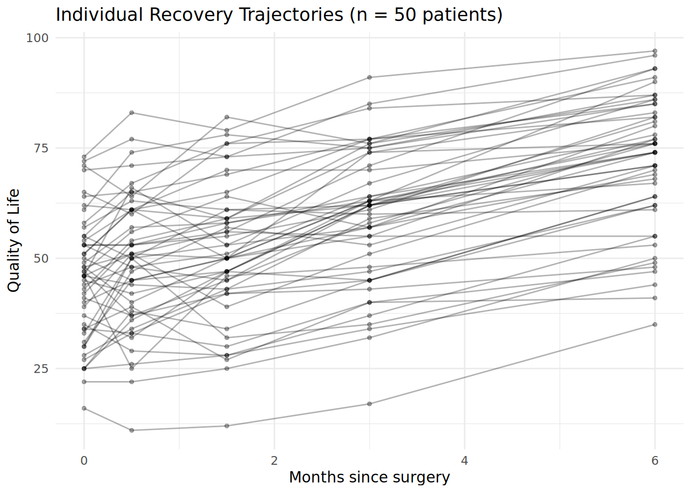
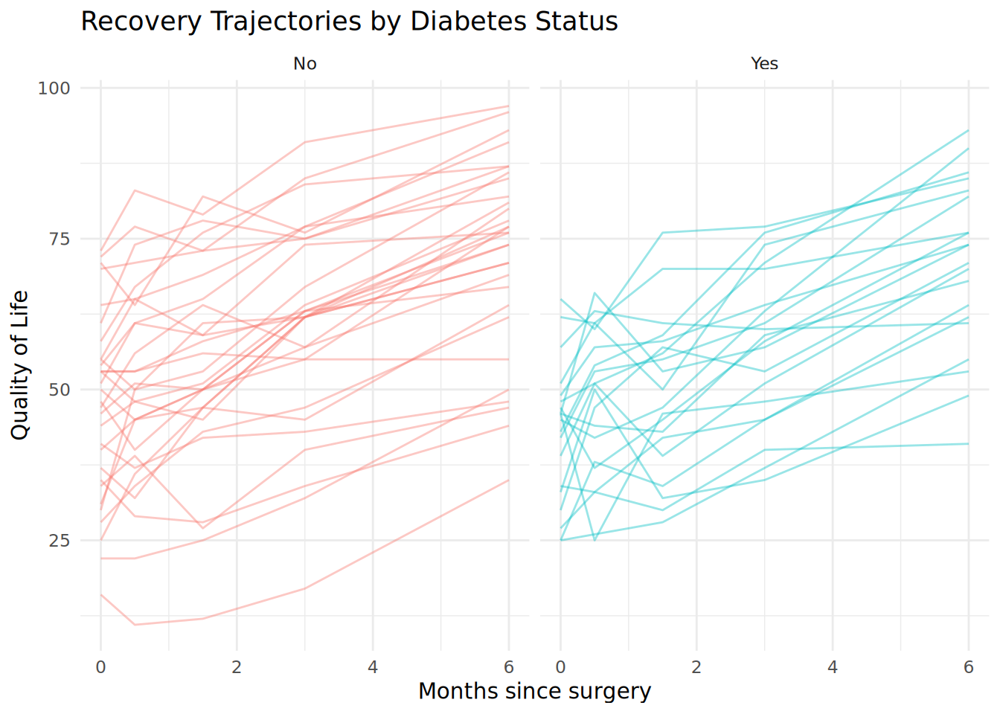
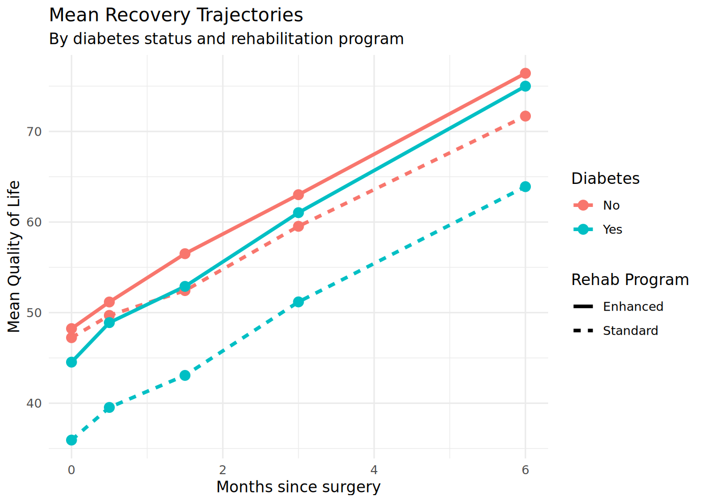
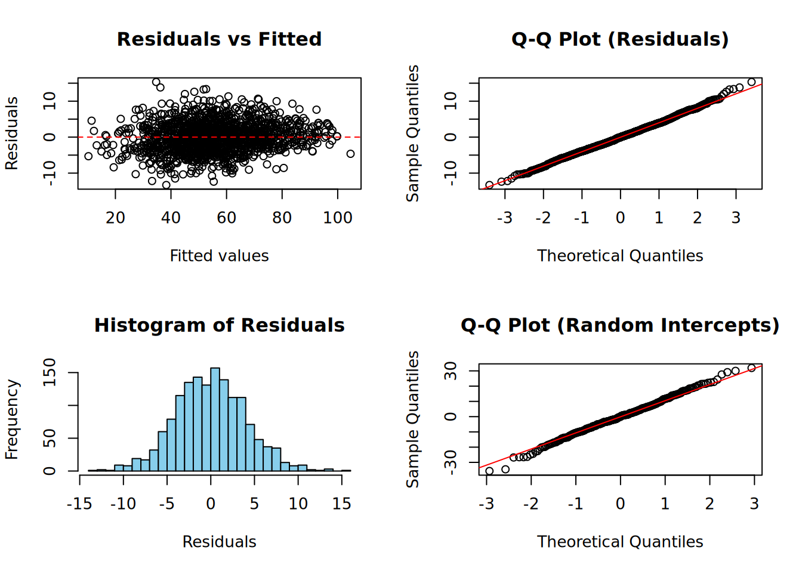
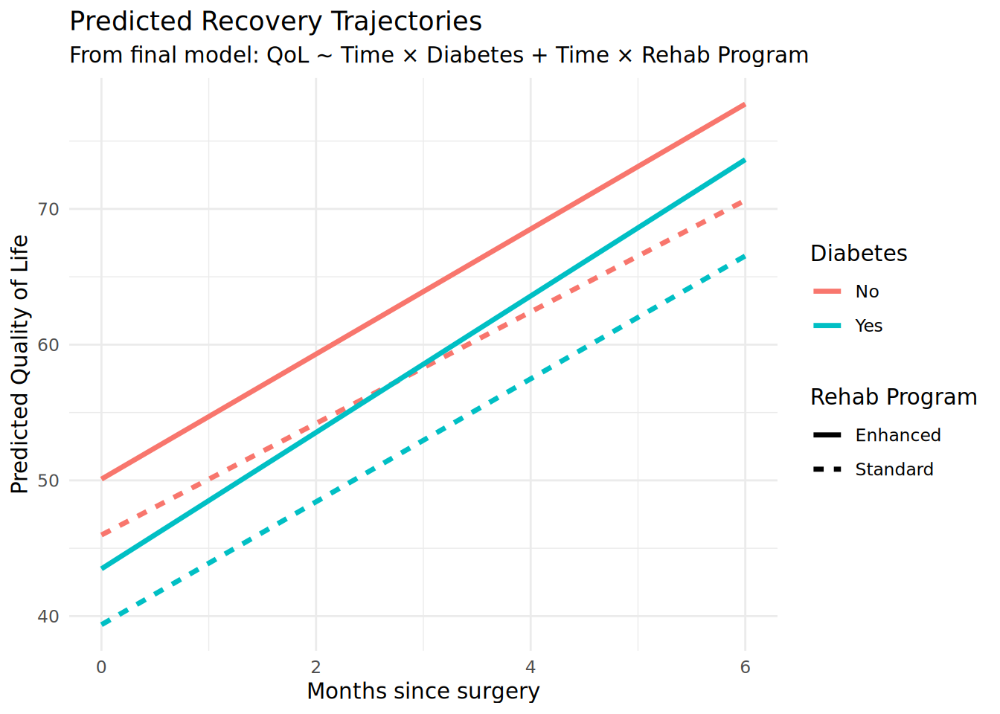
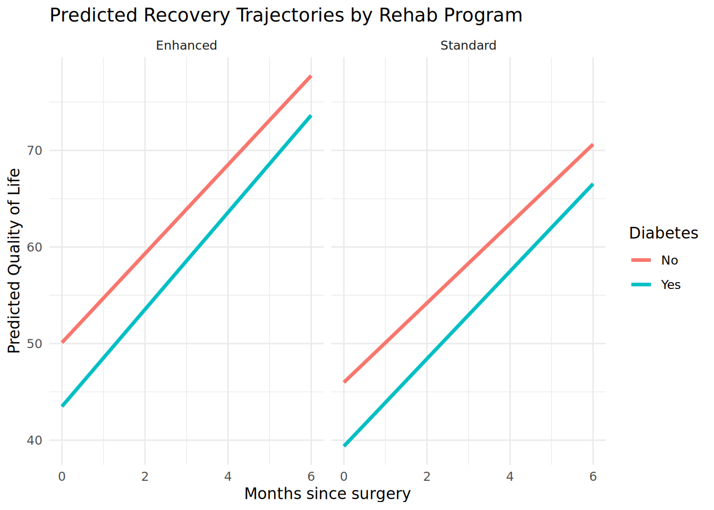

options(repos = c(CRAN = "https://cloud.r-project.org"))
if (!requireNamespace("pacman", quietly = TRUE)) install.packages("pacman")
pacman::p_load(dplyr, ggplot2, lmerTest, emmeans)Final Assignment: Cardiac Recovery Analysis
Model answer (Example: Quality of Life with Diabetes as moderator)
Example Analysis
This model answer demonstrates the analysis for a student with last two digits 25-49:
- Outcome: Quality of Life (0-100)
- Predictor: Diabetes status
Research questions:
- Does the rehabilitation program (Standard vs Enhanced) affect the recovery trajectory of Quality of Life?
- Does diabetes moderate the effect of the rehabilitation program on Quality of Life trajectory?
Generate the Example Dataset
# Simulate the same process students would use
student_id <- 999937 # Example ID with last two digits in 25-49 range
master_data <- read.csv("downloads/cardiac_recovery_master.csv")
set.seed(student_id)
# Sample 60% of patients
sampled_patients <- sample(unique(master_data$patient_id),
size = round(0.6 * length(unique(master_data$patient_id))))
my_data <- master_data %>%
filter(patient_id %in% sampled_patients)
# Show dataset summary
cat("Student ID:", student_id, "\n")Student ID: 999937 cat("Last two digits: 37 -> Quality of Life + Diabetes\n")Last two digits: 37 -> Quality of Life + Diabetescat("N patients:", n_distinct(my_data$patient_id), "\n")N patients: 300 cat("N observations:", nrow(my_data), "\n")N observations: 1500 Exploratory Data Analysis
Data Structure
# Convert categorical variables to factors
my_data <- my_data %>%
mutate(
diabetes = factor(diabetes),
sex = factor(sex),
surgery_type = factor(surgery_type),
rehab_program = factor(rehab_program),
visit = factor(visit, levels = c("Baseline", "2 weeks", "6 weeks", "3 months", "6 months"))
)
str(my_data)'data.frame': 1500 obs. of 11 variables:
$ patient_id : int 1 1 1 1 1 2 2 2 2 2 ...
$ visit : Factor w/ 5 levels "Baseline","2 weeks",..: 1 2 3 4 5 1 2 3 4 5 ...
$ time_weeks : int 0 2 6 12 24 0 2 6 12 24 ...
$ time_months : num 0 0.5 1.5 3 6 0 0.5 1.5 3 6 ...
$ age : int 79 79 79 79 79 59 59 59 59 59 ...
$ sex : Factor w/ 2 levels "Female","Male": 1 1 1 1 1 2 2 2 2 2 ...
$ diabetes : Factor w/ 2 levels "No","Yes": 1 1 1 1 1 2 2 2 2 2 ...
$ surgery_type : Factor w/ 2 levels "CABG","CABG+Valve": 2 2 2 2 2 1 1 1 1 1 ...
$ rehab_program : Factor w/ 2 levels "Enhanced","Standard": 1 1 1 1 1 2 2 2 2 2 ...
$ quality_of_life: int 40 41 47 50 73 43 56 46 64 68 ...
$ walk_distance : int 276 327 273 291 401 308 346 296 390 496 ...# Sample sizes
cat("Patients by diabetes status:\n")Patients by diabetes status:my_data %>% distinct(patient_id, diabetes) %>% count(diabetes) diabetes n
1 No 199
2 Yes 101cat("\nPatients by rehab program:\n")
Patients by rehab program:my_data %>% distinct(patient_id, rehab_program) %>% count(rehab_program) rehab_program n
1 Enhanced 155
2 Standard 145Distribution of Outcome
ggplot(my_data, aes(x = quality_of_life)) +
geom_histogram(bins = 25, fill = "skyblue", color = "black") +
labs(title = "Distribution of Quality of Life Scores",
x = "Quality of Life (0-100)", y = "Frequency") +
theme_minimal()
# By time point
ggplot(my_data, aes(x = visit, y = quality_of_life)) +
geom_boxplot(fill = "skyblue", alpha = 0.7) +
labs(title = "Quality of Life by Visit",
x = "Visit", y = "Quality of Life") +
theme_minimal()
Spaghetti Plots
# Overall trajectories (sample of 50 patients for clarity)
set.seed(42)
sample_patients <- sample(unique(my_data$patient_id), 50)
my_data %>%
filter(patient_id %in% sample_patients) %>%
ggplot(aes(x = time_months, y = quality_of_life, group = patient_id)) +
geom_line(alpha = 0.3) +
geom_point(alpha = 0.3, size = 1) +
labs(title = "Individual Recovery Trajectories (n = 50 patients)",
x = "Months since surgery", y = "Quality of Life") +
theme_minimal()
# By diabetes status
my_data %>%
filter(patient_id %in% sample_patients) %>%
ggplot(aes(x = time_months, y = quality_of_life, group = patient_id, color = diabetes)) +
geom_line(alpha = 0.4) +
facet_wrap(~diabetes) +
labs(title = "Recovery Trajectories by Diabetes Status",
x = "Months since surgery", y = "Quality of Life") +
theme_minimal() +
theme(legend.position = "none")
# Mean trajectories by diabetes and rehab program
mean_trajectories <- my_data %>%
group_by(diabetes, rehab_program, time_months) %>%
summarise(mean_qol = mean(quality_of_life, na.rm = TRUE), .groups = "drop")
ggplot(mean_trajectories, aes(x = time_months, y = mean_qol,
color = diabetes, linetype = rehab_program)) +
geom_line(linewidth = 1.2) +
geom_point(size = 3) +
labs(title = "Mean Recovery Trajectories",
subtitle = "By diabetes status and rehabilitation program",
x = "Months since surgery", y = "Mean Quality of Life",
color = "Diabetes", linetype = "Rehab Program") +
theme_minimal()
The EDA suggests:
- QoL improves over time
- Patients with diabetes may have lower QoL overall
- Enhanced rehab may be associated with faster recovery
Growth Curve Modeling
Model 1: Null Model
We start with a null model to calculate the ICC - how much variance is between patients vs. within patients over time:
# Null model with random intercepts for patients
model_null <- lmer(quality_of_life ~ 1 + (1 | patient_id), data = my_data)
summary(model_null)Linear mixed model fit by REML. t-tests use Satterthwaite's method [
lmerModLmerTest]
Formula: quality_of_life ~ 1 + (1 | patient_id)
Data: my_data
REML criterion at convergence: 12326.6
Scaled residuals:
Min 1Q Median 3Q Max
-2.2311 -0.6715 -0.1368 0.5030 3.2650
Random effects:
Groups Name Variance Std.Dev.
patient_id (Intercept) 116.4 10.79
Residual 159.9 12.64
Number of obs: 1500, groups: patient_id, 300
Fixed effects:
Estimate Std. Error df t value Pr(>|t|)
(Intercept) 55.7953 0.7033 299.0000 79.33 <2e-16 ***
---
Signif. codes: 0 '***' 0.001 '**' 0.01 '*' 0.05 '.' 0.1 ' ' 1# Calculate ICC
var_components <- as.data.frame(VarCorr(model_null))
var_between <- var_components$vcov[1] # Between-patient variance
var_within <- var_components$vcov[2] # Within-patient (residual) variance
ICC <- var_between / (var_between + var_within)
cat("Between-patient variance:", round(var_between, 2), "\n")Between-patient variance: 116.42 cat("Within-patient variance:", round(var_within, 2), "\n")Within-patient variance: 159.85 cat("ICC:", round(ICC, 3), "\n")ICC: 0.421 The ICC indicates that a substantial proportion of the variability in QoL is due to stable differences between patients, while the rest is due to within-patient variation over time. This confirms the need for a multilevel approach.
Model 2: Linear Growth with Random Slopes
We add time as a fixed effect and allow patients to have different growth rates:
# Growth model with random intercepts and slopes
model_growth <- lmer(quality_of_life ~ time_months + (time_months | patient_id),
data = my_data)
summary(model_growth)Linear mixed model fit by REML. t-tests use Satterthwaite's method [
lmerModLmerTest]
Formula: quality_of_life ~ time_months + (time_months | patient_id)
Data: my_data
REML criterion at convergence: 10484.1
Scaled residuals:
Min 1Q Median 3Q Max
-2.72412 -0.54083 0.00357 0.54046 3.02913
Random effects:
Groups Name Variance Std.Dev. Corr
patient_id (Intercept) 152.844 12.363
time_months 2.887 1.699 -0.25
Residual 24.779 4.978
Number of obs: 1500, groups: patient_id, 300
Fixed effects:
Estimate Std. Error df t value Pr(>|t|)
(Intercept) 45.8795 0.7370 299.0188 62.25 <2e-16 ***
time_months 4.5072 0.1147 299.0097 39.28 <2e-16 ***
---
Signif. codes: 0 '***' 0.001 '**' 0.01 '*' 0.05 '.' 0.1 ' ' 1
Correlation of Fixed Effects:
(Intr)
time_months -0.302# Compare to null model
anova(model_null, model_growth)Data: my_data
Models:
model_null: quality_of_life ~ 1 + (1 | patient_id)
model_growth: quality_of_life ~ time_months + (time_months | patient_id)
npar AIC BIC logLik -2*log(L) Chisq Df Pr(>Chisq)
model_null 3 12334 12350 -6163.9 12328
model_growth 6 10495 10527 -5241.3 10483 1845 3 < 2.2e-16 ***
---
Signif. codes: 0 '***' 0.001 '**' 0.01 '*' 0.05 '.' 0.1 ' ' 1The growth model significantly improves fit. Let’s examine the random effects:
var_comp <- as.data.frame(VarCorr(model_growth))
cat("Random intercept SD:", round(var_comp$sdcor[1], 2), "\n")Random intercept SD: 12.36 cat("Random slope SD:", round(var_comp$sdcor[2], 2), "\n")Random slope SD: 1.7 cat("Intercept-slope correlation:", round(var_comp$sdcor[3], 2), "\n")Intercept-slope correlation: -0.25 Model 3: Add Diabetes (Main Predictor)
# Use effects coding for easier interpretation
options(contrasts = c("contr.sum", "contr.poly"))
# Main effect and interaction with time
model_diabetes <- lmer(quality_of_life ~ time_months * diabetes +
(time_months | patient_id),
data = my_data)
summary(model_diabetes)Linear mixed model fit by REML. t-tests use Satterthwaite's method [
lmerModLmerTest]
Formula: quality_of_life ~ time_months * diabetes + (time_months | patient_id)
Data: my_data
REML criterion at convergence: 10468.2
Scaled residuals:
Min 1Q Median 3Q Max
-2.6713 -0.5505 0.0013 0.5375 3.0823
Random effects:
Groups Name Variance Std.Dev. Corr
patient_id (Intercept) 144.611 12.025
time_months 2.852 1.689 -0.23
Residual 24.778 4.978
Number of obs: 1500, groups: patient_id, 300
Fixed effects:
Estimate Std. Error df t value Pr(>|t|)
(Intercept) 44.8583 0.7598 297.9971 59.038 < 2e-16 ***
time_months 4.5827 0.1209 298.0039 37.913 < 2e-16 ***
diabetes1 3.1260 0.7598 297.9971 4.114 5.03e-05 ***
time_months:diabetes1 -0.2311 0.1209 298.0039 -1.912 0.0568 .
---
Signif. codes: 0 '***' 0.001 '**' 0.01 '*' 0.05 '.' 0.1 ' ' 1
Correlation of Fixed Effects:
(Intr) tm_mnt dibts1
time_months -0.286
diabetes1 -0.327 0.093
tm_mnths:d1 0.093 -0.327 -0.286# Test significance of diabetes effects
anova(model_growth, model_diabetes)Data: my_data
Models:
model_growth: quality_of_life ~ time_months + (time_months | patient_id)
model_diabetes: quality_of_life ~ time_months * diabetes + (time_months | patient_id)
npar AIC BIC logLik -2*log(L) Chisq Df Pr(>Chisq)
model_growth 6 10495 10527 -5241.3 10483
model_diabetes 8 10482 10524 -5232.8 10466 17.136 2 0.0001901 ***
---
Signif. codes: 0 '***' 0.001 '**' 0.01 '*' 0.05 '.' 0.1 ' ' 1Model 4: Add Rehab Program with Interaction
# Full model
model_full <- lmer(quality_of_life ~ time_months * diabetes +
time_months * rehab_program +
(time_months | patient_id),
data = my_data)
summary(model_full)Linear mixed model fit by REML. t-tests use Satterthwaite's method [
lmerModLmerTest]
Formula:
quality_of_life ~ time_months * diabetes + time_months * rehab_program +
(time_months | patient_id)
Data: my_data
REML criterion at convergence: 10451.3
Scaled residuals:
Min 1Q Median 3Q Max
-2.67437 -0.54969 -0.00238 0.54049 3.07937
Random effects:
Groups Name Variance Std.Dev. Corr
patient_id (Intercept) 140.886 11.870
time_months 2.803 1.674 -0.26
Residual 24.779 4.978
Number of obs: 1500, groups: patient_id, 300
Fixed effects:
Estimate Std. Error df t value Pr(>|t|)
(Intercept) 44.7313 0.7519 296.9995 59.491 < 2e-16 ***
time_months 4.5674 0.1203 297.0021 37.958 < 2e-16 ***
diabetes1 3.3047 0.7532 296.9995 4.388 1.59e-05 ***
rehab_program1 2.0582 0.7122 296.9995 2.890 0.00414 **
time_months:diabetes1 -0.2096 0.1205 297.0021 -1.739 0.08310 .
time_months:rehab_program1 0.2482 0.1140 297.0021 2.178 0.03022 *
---
Signif. codes: 0 '***' 0.001 '**' 0.01 '*' 0.05 '.' 0.1 ' ' 1
Correlation of Fixed Effects:
(Intr) tm_mnt dibts1 rhb_p1 tm_m:1
time_months -0.313
diabetes1 -0.330 0.103
rehb_prgrm1 -0.058 0.018 0.082
tm_mnths:d1 0.103 -0.330 -0.313 -0.026
tm_mnths:_1 0.018 -0.058 -0.026 -0.313 0.082# Compare models
anova(model_diabetes, model_full)Data: my_data
Models:
model_diabetes: quality_of_life ~ time_months * diabetes + (time_months | patient_id)
model_full: quality_of_life ~ time_months * diabetes + time_months * rehab_program + (time_months | patient_id)
npar AIC BIC logLik -2*log(L) Chisq Df Pr(>Chisq)
model_diabetes 8 10482 10524 -5232.8 10466
model_full 10 10467 10520 -5223.5 10447 18.494 2 9.641e-05 ***
---
Signif. codes: 0 '***' 0.001 '**' 0.01 '*' 0.05 '.' 0.1 ' ' 1# Model comparison summary
cat("Model Comparison (AIC):\n")Model Comparison (AIC):cat(" Null model:", round(AIC(model_null), 1), "\n") Null model: 12332.6 cat(" Growth model:", round(AIC(model_growth), 1), "\n") Growth model: 10496.1 cat(" + Diabetes:", round(AIC(model_diabetes), 1), "\n") + Diabetes: 10484.2 cat(" + Rehab program:", round(AIC(model_full), 1), "\n") + Rehab program: 10471.3 Model Diagnostics
par(mfrow = c(2, 2))
# Residuals vs fitted
plot(fitted(model_full), residuals(model_full),
xlab = "Fitted values", ylab = "Residuals",
main = "Residuals vs Fitted")
abline(h = 0, lty = 2, col = "red")
# Q-Q plot of residuals
qqnorm(residuals(model_full), main = "Q-Q Plot (Residuals)")
qqline(residuals(model_full), col = "red")
# Histogram of residuals
hist(residuals(model_full), breaks = 30, main = "Histogram of Residuals",
xlab = "Residuals", col = "skyblue")
# Q-Q plot of random intercepts
ranef_int <- ranef(model_full)$patient_id[, "(Intercept)"]
qqnorm(ranef_int, main = "Q-Q Plot (Random Intercepts)")
qqline(ranef_int, col = "red")
The diagnostic plots show reasonable adherence to model assumptions.
Visualization of Results
# Create prediction data
pred_grid <- expand.grid(
time_months = seq(0, 6, by = 0.5),
diabetes = levels(my_data$diabetes),
rehab_program = levels(my_data$rehab_program)
)
# Get predictions (fixed effects only)
pred_grid$predicted <- predict(model_full, newdata = pred_grid, re.form = NA)
# Plot
ggplot(pred_grid, aes(x = time_months, y = predicted,
color = diabetes, linetype = rehab_program)) +
geom_line(linewidth = 1.2) +
labs(title = "Predicted Recovery Trajectories",
subtitle = "From final model: QoL ~ Time × Diabetes + Time × Rehab Program",
x = "Months since surgery",
y = "Predicted Quality of Life",
color = "Diabetes",
linetype = "Rehab Program") +
theme_minimal() +
theme(legend.position = "right")
# Faceted version for clarity
ggplot(pred_grid, aes(x = time_months, y = predicted, color = diabetes)) +
geom_line(linewidth = 1.2) +
facet_wrap(~rehab_program) +
labs(title = "Predicted Recovery Trajectories by Rehab Program",
x = "Months since surgery",
y = "Predicted Quality of Life",
color = "Diabetes") +
theme_minimal()
Interpretation of Results
Fixed Effects
# Extract and interpret fixed effects
coefs <- fixef(model_full)
print(round(coefs, 3)) (Intercept) time_months
44.731 4.567
diabetes1 rehab_program1
3.305 2.058
time_months:diabetes1 time_months:rehab_program1
-0.210 0.248 With effects coding:
- Intercept: The grand mean QoL at baseline (time = 0), averaging across diabetes status and rehab program
- time_months: Average improvement in QoL per month
- diabetes1: How much patients without diabetes differ from the grand mean
- rehab_program1: Effect of Enhanced rehab relative to grand mean
- Interactions: How recovery rates differ by group
Estimated Marginal Means
# Estimated means at 6 months by group
emmeans(model_full, ~ diabetes * rehab_program, at = list(time_months = 6)) diabetes rehab_program emmean SE df lower.CL upper.CL
No Enhanced 77.7 1.31 297 75.2 80.3
Yes Enhanced 73.6 1.57 297 70.5 76.7
No Standard 70.6 1.28 297 68.1 73.2
Yes Standard 66.5 1.69 297 63.2 69.9
Degrees-of-freedom method: kenward-roger
Confidence level used: 0.95 # Recovery rates by group
emtrends(model_full, ~ diabetes * rehab_program, var = "time_months") diabetes rehab_program time_months.trend SE df lower.CL upper.CL
No Enhanced 4.61 0.182 297 4.25 4.96
Yes Enhanced 5.03 0.218 297 4.60 5.46
No Standard 4.11 0.178 297 3.76 4.46
Yes Standard 4.53 0.235 297 4.07 4.99
Degrees-of-freedom method: kenward-roger
Confidence level used: 0.95 Summary and Conclusions
Key Findings
Overall recovery pattern: Quality of life improves significantly over the 6-month follow-up period.
Effect of diabetes: Patients with diabetes have lower QoL scores compared to those without diabetes.
Effect of rehabilitation program: The enhanced rehabilitation program is associated with better outcomes and may accelerate recovery.
Random effects: There is substantial variability between patients in both their baseline QoL and their recovery rates.
Clinical Implications
- Patients with diabetes may benefit from additional support during cardiac recovery
- Enhanced rehabilitation programs appear to improve outcomes
- Individual variability highlights the importance of personalized care
Limitations
- Simulated data: This is simulated data for educational purposes
- Missing confounders: Other factors may influence recovery
- Linear time assumption: Recovery patterns may be non-linear